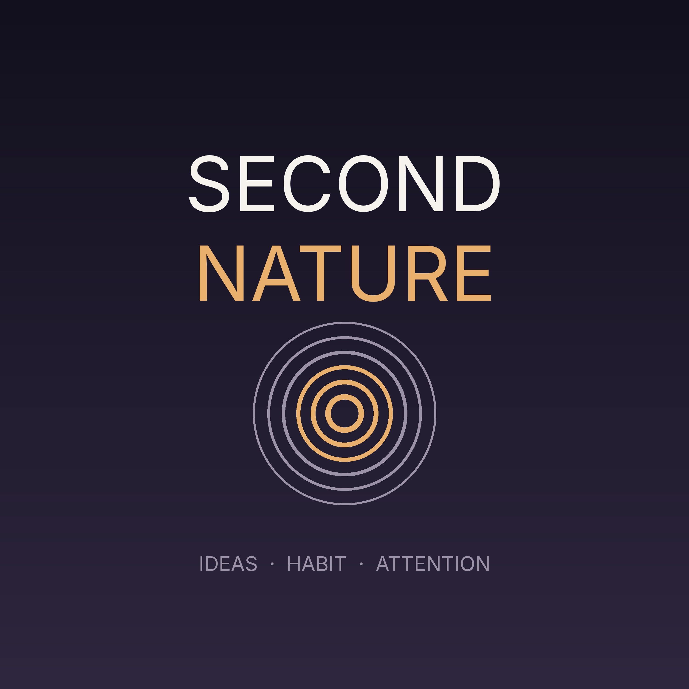

Second Nature
Second Nature
Two hosts read the self-improvement canon so you do not have to take it on faith. Each episode pulls together a stack of essays on one question about attention, habit, character or ambition, finds the through-line, and argues about where the advice breaks down. Ideas only: no gurus, no morning routines, no listener mail.
Subscribe
Paste this into Overcast, Pocket Casts, or any podcast app:
https://adil1248.github.io/eryw9kye47ewvf0s7o/feed.xml
Episodes
- 2026-09-03 — 2. The Productive Struggle (13 min)
- 2026-09-02 — 1. Does Anyone Actually Change (11 min)